1. 프로젝트 범위관리 프로세스
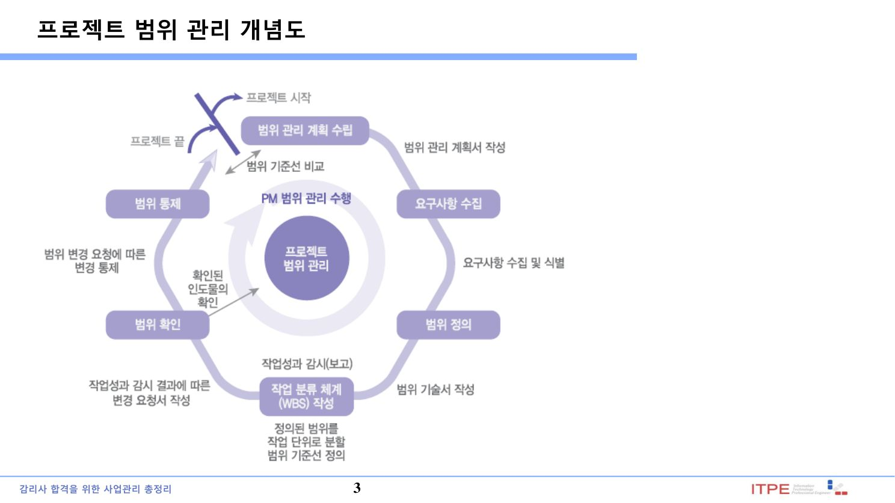
| 프로세스 | 내용·산출물 |
|---|---|
| 범위관리 계획수립 | 범위를 관리할 절차·방법 정의 → 범위관리 계획서, 요구사항관리 계획서 |
| 요구사항 수집 | 이해관계자 요구 수집·문서화 → 요구사항 문서, 요구사항 추적 매트릭스(RTM) |
| 범위 정의 | 제품·서비스 범위 기술 → 프로젝트 범위 기술서 |
| WBS 작성 | 인도물을 계층적으로 분해 → 범위 기준선 |
| 범위 확인 | 완료 인도물에 대한 고객·스폰서의 공식 승인 |
| 범위 통제 | 범위·기준선 변경 감시·통제(스코프 크리프 방지) |
프로세스별 상세 설명
② 요구사항 수집: 이해관계자의 요구·기대를 도출·문서화하고 추적성을 확보(요구사항 문서·RTM).
③ 범위 정의: 제품·프로젝트의 상세한 범위 기술서를 개발하여 포함/제외 경계를 명확히 함.
④ WBS 작성: 인도물·작업을 계층적으로 분해하여 관리 가능한 단위로 만듦 → 범위 기준선.
⑤ 범위 확인: 완료된 인도물에 대한 고객·스폰서의 공식 인수(수용)를 획득.
⑥ 범위 통제: 범위·기준선의 상태를 감시하고 변경을 관리(스코프 크리프 방지).
▸ 원본 p.6 표 복원: 범위 관리 계획 수립
| 입력물(Input) | 도구 및 기법(Tool & Technique) | 산출물(Output) |
|---|---|---|
| 프로젝트 관리 계획서 (Project Management Plan) 프로젝트 헌장(Project Charter) EEF OPA | 전문가 판단(Expert judgment) 회의(Meeting) | 범위관리 계획서 (Scope Management Plan) 요구사항관리 계획서 (Requirements Management Plan) |
2. 요구사항 수집 · 분류
요구사항 수집(Collect Requirements)은 이해관계자의 요구·기대를 도출·문서화하는 프로세스다. 요구사항은 목적·성격에 따라 다음과 같이 분류된다.
| 요구사항 종류 | 내용 |
|---|---|
| 비즈니스 요구사항 | 조직의 상위 목적·목표(왜 하는가) |
| 이해관계자 요구사항 | 특정 이해관계자·집단의 요구 |
| 솔루션 요구사항 | 기능(동작) + 비기능(성능·보안·신뢰성 등 품질특성) |
| 이행(전환) 요구사항 | 현행→목표 전환·데이터 이관·교육 등 임시 요구 |
| 프로젝트 요구사항 | 수행 활동·절차·기법 등 |
| 품질 요구사항 | 인도물 완료 검증·품질 기준 |
▸ 원본 p.14 표 복원: 요구사항 수집(Collect Requirements)
| 입력물(Input) | 도구 및 기법(Tool & Technique)★ | 산출물(Output) |
|---|---|---|
| 범위관리계획서 (Scope Management Plan) 요구사항 관리계획서 (Requirements Management Plan) | 인터뷰(Interview) 포커스 그룹(Focus Group) 심층 워크샵(Facilitated Workshop) 집단창의력기법 (Group Creativity Workshop) 집단 의사결정 기법(Group Decision Making Technique) 설문지 및 설문조사 (Questionnaires and Surveys) 관찰(Observations) 프로토타입(Prototypes) 벤치마킹(Benchmarking) 컨텍스트 다이어그램 (Context Diagrams) 문서분석(Document Analysis) | 요구사항 문서 (Requirement Documentation) 요구사항 추적 매트릭스 (Requirement Traceability Matrix) RT |
▸ 원본 p.46 표 복원: 범위 정의
| 입력물(Input) | 도구 및 기법(Tool & Technique) | 산출물(Output) |
|---|---|---|
| 범위관리계획서 (Scope Management Plan) 프로젝트 헌장(Project Charter) 요구사항문서 (Requirement Documentation) 조직 프로세스 자산(OPA) | 전문가 판단(Expert judgment) 제품분석(Product Analysis)★ 대안식별(개발) (Alternatives Generation) 심층 워크샵 (Facilitated Workshop) • 정대심 | 프로젝트 범위기술서 (Project Scope Statement) 프로젝트 문서 갱신 (Project Document Update) |
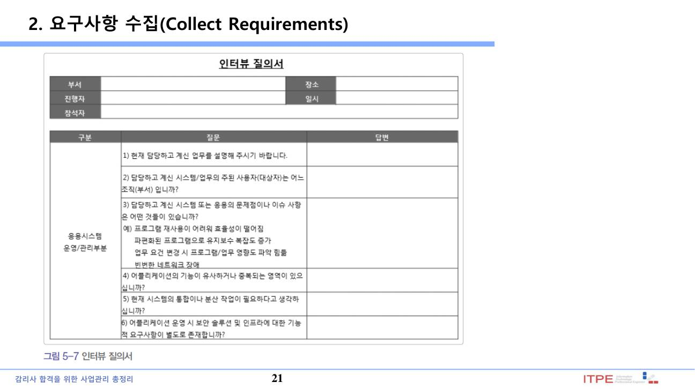
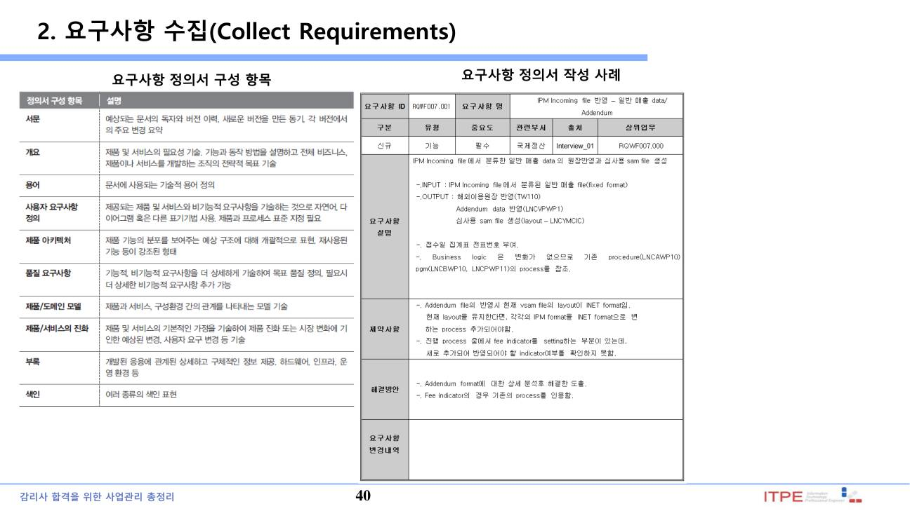
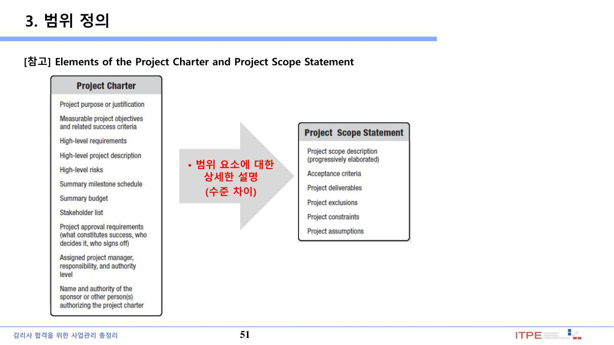
3. WBS 작성 · 범위 기준선 ★★★
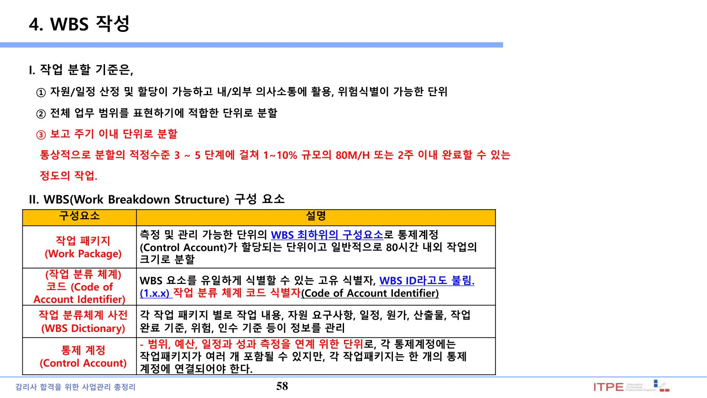
| 개념 | 내용 |
|---|---|
| WBS | 인도물 중심으로 작업을 계층적으로 분해한 구조 |
| 작업 패키지(Work Package) | WBS 최하위 요소(일정·원가 산정·통제의 기본 단위) |
| WBS 사전(Dictionary) | 각 WBS 요소의 상세 설명(작업 내용·산출물·책임 등) |
| 범위 기준선 | 범위 기술서 + WBS + WBS 사전 |
- 100% 규칙: WBS는 프로젝트 전체 범위의 100%를 포함(누락·중복 없음).
- 8/80 규칙: 작업 패키지는 8~80시간 분량으로 분해(경험칙).
- WBS는 '활동(Activity)'이 아니라 '인도물(Deliverable)' 중심으로 분해한다.
▸ 원본 p.55 표 복원: WBS 작성
| 입력물(Input) | 도구 및 기법(Tool & Technique) | 산출물(Output) |
|---|---|---|
| 범위관리계획서 (Scope Management Plan) 프로젝트 범위 기술서 (Project Scope Statement) 요구사항 문서 (Requirements Documentation) 기업환경요인 (Enterprise environmental Factors) 조직 프로세스 자산(OPA) | 분할(Decomposition) 전문가 판단(Expert Judgment) | 범위기준선(Scope Baseline)★ 프로젝트 문서 갱신 (Project Documents Updates) |
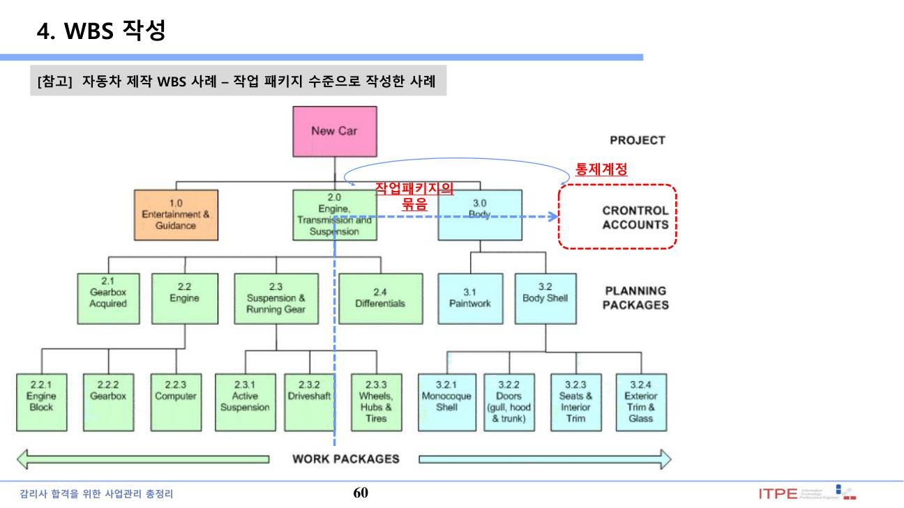
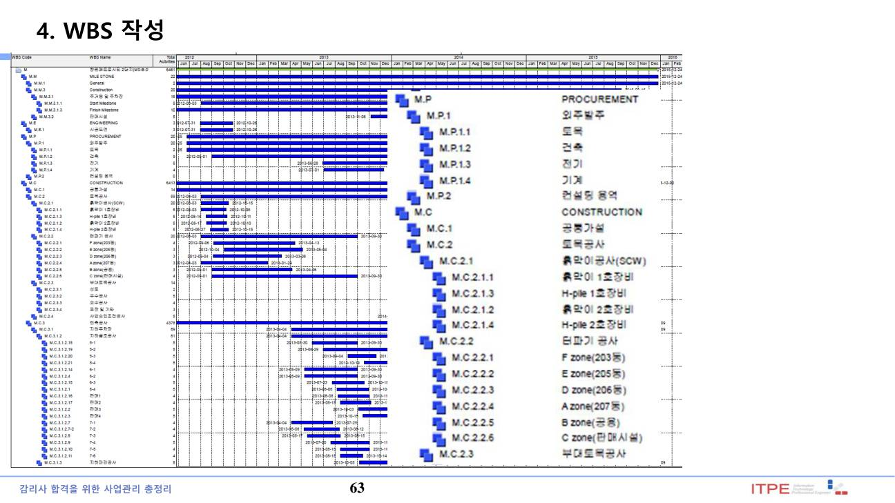
4. 범위 확인 vs 범위 통제 vs 품질 통제 ★★
완료된 인도물은 내부 품질 통제(검사)를 거친 뒤 고객의 범위 확인(공식 수용)을 받는다. 세 활동은 목적·주체가 다르므로 구분해야 한다.
| 구분 | 목적 | 주체 |
|---|---|---|
| 품질 통제(Control Quality) | 인도물의 정확성·품질 검사 | 품질팀(내부) |
| 범위 확인(Validate Scope) | 인도물의 공식 수용·승인 | 고객·스폰서 |
| 범위 통제(Control Scope) | 범위 변경 감시·통제 | PM/변경통제 |
▸ 원본 p.68 표 복원: 범위 확인
| 입력물(Input) | 도구 및 기법(Tool & Technique) | 산출물(Output) |
|---|---|---|
| 프로젝트 관리 계획서 (Project Management Plan) 요구사항 문서(Requirements Documentation) 요구사항 추적 매트릭스 (Requirement Traceability Matrix) 검증된 인도물 (Verified Deliverables) 작업성과 데이터 (Work Performance Data) | 검사(Inspection) 집단 의사결정 기법 (Group Decision Making Technique) | 인수된 인도물 (Accepted Deliverables) 변경요청(Change Requests) 작업성과 정보 (Work Performance Information) 프로젝트 문서 갱신 (Project Documents Update) 확인 |
| 검증된 인도물 (Verified Deliverables) |
|---|
▸ 원본 p.77 표 복원: 범위 통제
| 입력물(Input) | 도구 및 기법(Tool & Technique) | 산출물(Output) |
|---|---|---|
| 프로젝트 관리 계획서 (Project Management Plan) 요구사항 문서 (Requirements Documentation) 요구사항 추적 매트릭스 (Requirement Traceability Matrix) 작업성과 데이터 (Work Performance Data) 조직 프로세스 자산(OPA) | 차이 분석(Variance Analysis)★ 통차 | 작업성과 정보 (Work Performance Information) 변경요청(Change Requests) 프로젝트 관리 계획서 갱신 (Project Management Plan Updates) 프로젝트 문서 갱신 (Project Documentation Updates) 조직 프로세스 자산 갱신 (Organizational process assets Updates) |
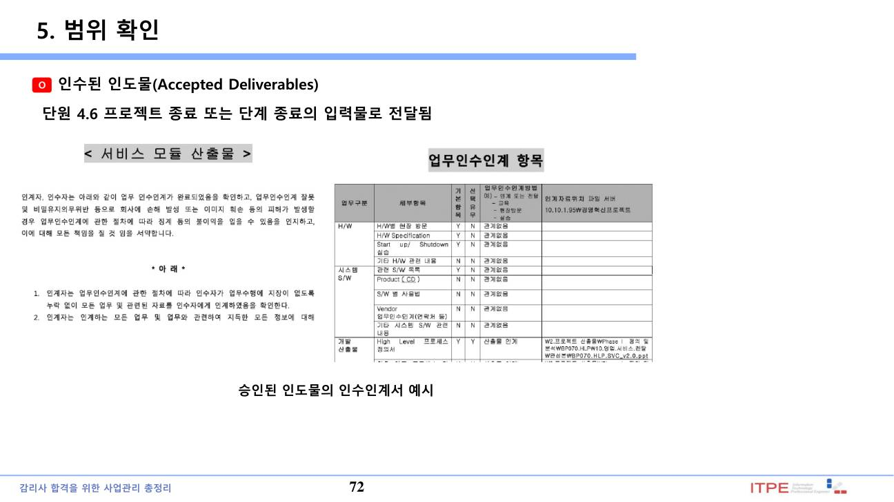
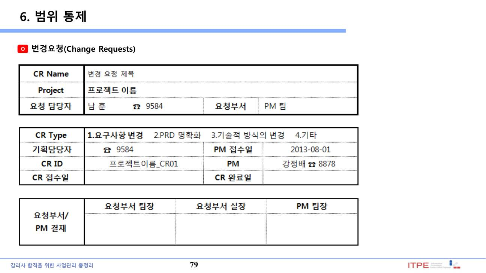
5. 일정(시간)관리 프로세스
일정(시간)관리는 프로젝트를 적시에 완료하기 위해 활동을 정의·순서화하고 기간을 산정하여 일정을 개발·통제하는 지식영역이다.
| 프로세스 | 내용 |
|---|---|
| 일정관리 계획수립 | 일정 개발·통제 절차·방법 정의 |
| 활동 정의 | 작업 패키지를 활동(Activity)으로 분해 |
| 활동 순서 배열 | 활동 간 선후행 관계(PDM) 정의 → 네트워크 다이어그램 |
| 활동 기간 산정 | 유사·모수·3점(PERT) 산정 |
| 일정 개발 | CPM(주공정법)으로 일정 기준선 확정 |
| 일정 통제 | 진척 감시·변경 통제(EVM 활용) |
프로세스별 상세 설명
② 활동 정의: 작업 패키지를 인도물 생산에 필요한 구체적 활동(Activity)으로 세분화.
③ 활동 순서 배열: 활동 간 논리적 선후행 관계(PDM)를 정의 → 일정 네트워크 다이어그램.
④ 활동 자원 산정: 활동별로 필요한 인력·장비·자재의 종류·수량을 산정.
⑤ 활동 기간 산정: 자원·산정정보로 활동별 작업 기간(근무일 수)을 추정.
⑥ 일정 개발: 활동·순서·자원·기간을 종합해 일정 모델(일정 기준선)을 확정(CPM).
⑦ 일정 통제: 일정 상태를 감시하고 기준선 변경을 관리.
▸ 원본 p.88 표 복원: 일정 관리 계획수립(Plan Schedule Management)
| 입력물(Input) | 도구 및 기법(Tool & Technique) | 산출물(Output) |
|---|---|---|
| 프로젝트 관리 계획서 (Project Management Plan) 프로젝트 헌장 (Project Charter) 기업 환경 요인 (Enterprise Environmental Factors) 조직 프로세스 자산 (Organizational Process Assets) | 전문가적 판단(Expert Judgment) 분석 기법(Analytical Techniques) 미팅(Meetings) | 일정 관리 계획서★ (Schedule Management Plan) |
▸ 원본 p.94 표 복원: 활동 정의
| 입력물(Input) | 도구 및 기법(Tool & Technique) | 산출물(Output) |
|---|---|---|
| 일정 관리 계획서 (Schedule Management Plan) 범위 기준선(Scope Baseline) 기업 환경 요인 (Enterprise Environmental Factors) 조직 프로세스 자산 (Organizational Process Assets) | 분할(Decomposition) 연동 계획(Rolling Wave Planning) 전문가 판단(Expert Judgment) | 활동 목록(Activity List) 활동 속성(Activity Attributes) 마일스톤 목록 (Milestone List) |
▸ 원본 p.95 내용 복원: 활동 정의
분할(Decomposition)★ WBS의 Work package를 관리하기 쉬운 작업 단위인 활동(Activity)으로 세분하는 작업이다. Work Package는 인도물(deliverables)단위인데 이보다 더 상세한 단위가 활동(Activity)이 된다. Work Package 와 Activity의 유사한 차이를 이해할 수 있어야 하는데 Work Package는 인도물 중심의 관점이라면 활동 (Activity)은 해당 인도물을 얻기 위한 활동이 된다. 분할(Decomposition)은 WBS작성의 도구 및 기법이기도 하며 활동 정의의 도구 및 기법이기도 하다 구분 Work Package Activity 분할 관점 What to do(무엇 측면) How to do(무엇을 어떻게 개발) 분할 대상 인도물(deliverables) 중심 Work Package 중심 세부 정보 WBS Dictionary Activity Attribute • Work Package를 분할하면, Schedule Activity가 되며, Activity의 상세 속성은 Activity Attribute 에 표현된다.
▸ 원본 p.101 표 복원: 활동 순서 배열
| 입력물(Input) | 도구 및 기법(Tool & Technique) | 산출물(Output) |
|---|---|---|
| 일정 관리 계획서 (Schedule Management Plan) 활동 목록(Activity List) 활동 속성(Activity Attributes) 마일스톤 목록(Milestone List) 프로젝트 범위 기술서 (Project Scope Statement) 기업 환경 요인 (Enterprise Environmental Factors) 조직 프로세스 자산 (Organizational Process Assets) | 선후행도형법 (Precedence Diagramming Method, PDM) 의존관계 결정 (Dependency Determination) 선도 및 지연 적용(Leads and Lags) | 프로젝트 일정 네트워크도 (Project Schedule Network Diagrams) 프로젝트 문서 갱신 (Project Document Updates) |
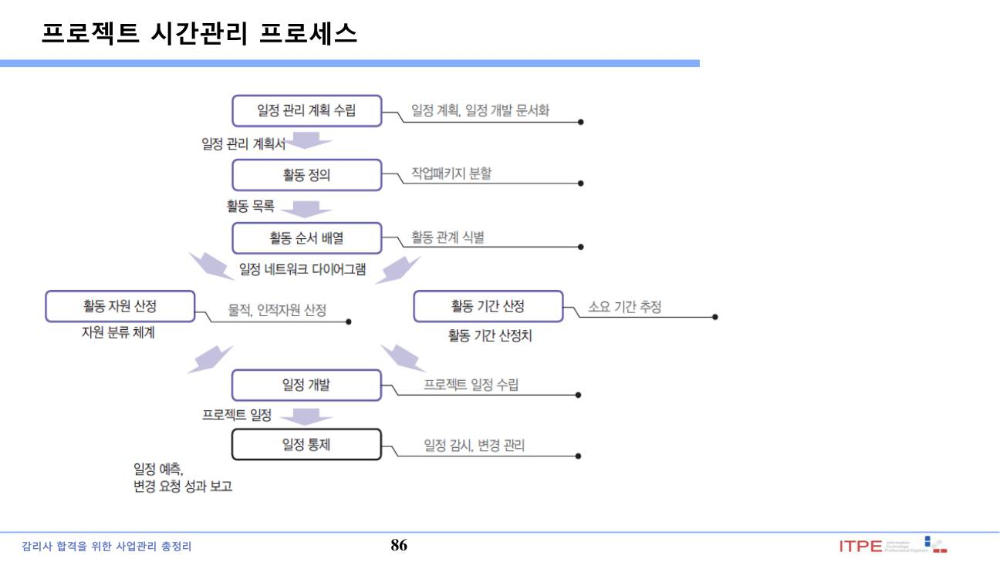
6. 선후행 관계(PDM) · 리드 · 래그
활동 간 의존관계는 선후행 도형법(PDM)으로 네트워크에 표현하며, 관계 유형(FS·SS·FF·SF)과 선도(Lead)·지연(Lag)으로 일정을 조정한다.
| 관계(PDM) | 의미 |
|---|---|
| FS(Finish-Start) | 선행 완료 후 후행 시작 (가장 일반적) |
| SS(Start-Start) | 선행 시작 후 후행 시작 |
| FF(Finish-Finish) | 선행 완료 후 후행 완료 |
| SF(Start-Finish) | 선행 시작 후 후행 완료(드묾) |
▸ 원본 p.107 표 복원: 활동 순서 배열
| 의존관계 | 특징 및 설명 | 그림 사례 |
|---|---|---|
| FS | Finish-to-Start 선행활동이 완료되면 후행활동이 시작 가장 많이 사용 예) 보고서작성(선행활동)이 종료된 후 보고서출력(후행활동)을 시작함 | |
| FF | Finish-to-Finish 선행활동이 완료되면 후행활동도 완료 예) 보고서작성(선행활동)이 종료되면 보고서번역(후행활동)도 종료함 | |
| SS | Start-to-Start 선행활동이 시작하면 후행활동이 시작 예) 보고서편집(후행활동)은 보고서작성(선행활동)활동이 시작 후 같이 시작함 | |
| SF | Start-to-Finish 후행활동을 시작하면 선행활동이 종료 거의 발생 안 함 예) 시험(후행활동)이 시작하면 시험준비(선행활동)는 종료함 |
▸ 원본 p.109 내용 복원: 활동 순서 배열
선도 및 지연 적용(Leads and Lags) 후행활동의 시작을 앞 당기는 관계를 선도(Lead), 후행활동의 시작을 지연시키는 관계를 지연(Lag)이라고 한다. 선도(Lead)는 의존관계에서 ‘-‘로 표시하며 d는 기간을 나타낸다. 예를 들어 선행활동이 완료되기 5일전에 후행활동을 시작한다고 하면 FS – 5d로 표시한다. 지연(Lag)은 의존관계에서 ‘+‘로 표시하며 d는 기간을 나타낸다. 예를 들어 선행활동이 완료된 후 5일후에 후행활동을 시작한다고 하면 FS + 5d로 표시한다. Lead Lag 매뉴얼 작성이 완료되기 5일전에 매뉴얼 교정을 시작한다. 콘크리트 타설 후 도색작업을 위해서 양생기간을 5일을 기다려야 한다 선행활동을 종료하기 전에 후행활동을 시작할 수 있는 관계 선행활동이 종료되고 일정 기간이 지나서 후행활동을 착수할 수 있는 관계
▸ 원본 p.113 표 복원: 활동 자원 산정(Estimate Activity Resources)
| 입력물(Input) | 도구 및 기법(Tool & Technique) | 산출물(Output) |
|---|---|---|
| 일정 관리 계획서 (Schedule Management Plan) 활동 목록(Activity List) 활동 속성(Activity Attributes) 자원 달력★ (Resource Calendars) 위험 관리대장(Risk Register) 활동 원가 산정치 (Activity Cost Estimates) 기업환경요인(EEF) 조직 프로세스 자산(OPA) | 전문가 판단(Expert Judgment) 대안 분석(Alternative Analysis) 출판된 산정 자료 (Published Estimating Data) 상향식 산정(Bottom-up Estimating) 프로젝트 관리 소프트웨어 (Project Management Software) | 활동 자원 요구사항 (Activity Resource Requirements)★ 자원 분류 체계 (Resource Breakdown Structure) 프로젝트 문서 갱신 (Project Document Updates) |
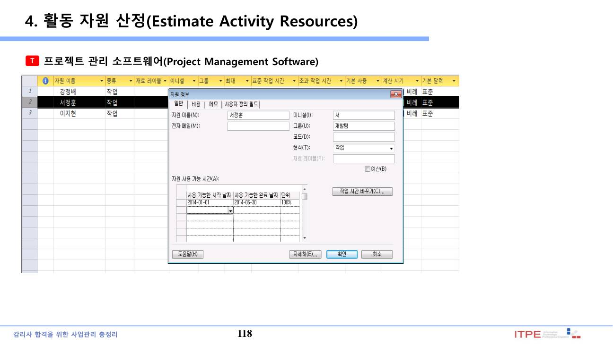
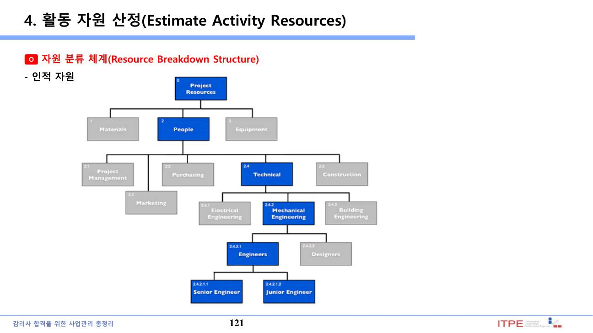
7. 활동 기간 산정(Estimate Activity Durations) ★★
활동 기간 산정은 산정된 자원과 정보로 각 활동의 작업 기간(근무일 수)을 추정하는 프로세스다.
| 기법 | 내용 |
|---|---|
| 유사 산정(Analogous) | 과거 유사 활동의 실제 기간을 근거로 추정하는 하향식 기법. 전문가 판단·이력정보 활용, 정보 부족한 초기에 사용. 빠르나 정확도 낮음 |
| 모수 산정(Parametric) | 단위 작업량 × 생산성 등 통계적 관계로 기간 산정. 예) 도면 1장당 소요일수 × 도면 수. 데이터 신뢰도 높을수록 정확 |
| 3점 산정(PERT) | 불확실성 반영해 낙관(O)·최빈(M)·비관(P) 3값으로 추정. 베타분포 기대기간 (O + 4M + P)/6, 표준편차 (P−O)/6 |
| 델파이(Delphi) | 선정된 전문가들이 서로 대면하지 않고 익명 설문을 반복(라운드)하여 의견을 수렴·합의. 집단사고·권위 압박을 방지 |
| 예비 분석 | 일정 위험 대비 우발·관리 예비(버퍼)를 기간에 반영(CCM의 프로젝트 버퍼 등) |
▸ 원본 p.124 표 복원: 활동 기간 산정(Estimate Activity Durations)
| 입력물(Input) | 도구 및 기법(Tool & Technique) | 산출물(Output) |
|---|---|---|
| 일정 관리 계획서 (Schedule Management Plan) 활동 목록(Activity List) 활동 속성(Activity Attributes) 활동 자원 요구사항 (Activity Resource Requirements) 자원 달력 (Resource Calendars) 프로젝트 범위 기술서 (Project Scope Statement) 위험 관리대장(Risk Register) 자원 분류 체계 (Resource Breakdown Structure) 기업환경요인(EEF) 조직 프로세스 자산(OPA) | 전문가 판단(Expert Judgment) 유사 산정(Analogous Estimating) 모수 산정(Parametric Estimating) 3점 산정(Three-Point Estimating) 그룹 의사결정 기법 (Group Decision-Making Techniques) 예비 분석(Reserve Analysis) | 활동 기간 산정치 (Activity Duration Estimates) 프로젝트 문서 갱신 (Project Document Updates) |
▸ 원본 p.128 내용 복원: 활동 기간 산정(Estimate Activity Durations)
3점 추정 방식(기존 PERT 방식에서 유래)
가. 3점 산정으로 추정하는 활동기간 기대치는 각 활동에 낙관치(Optimistic), 비관치(pessimistic), 평균치(most likely)의 산정 값을 계산함으로 정확도를 높이고 위험을 고려하여 산정 - 낙관치(Optimistic, O): 최상의 시나리오에서 추정되는 기간, 최대한 짧게 추정하는 기간 - 평균치(Most likely, M): 기대 가능한 활동 기간, 보통으로 추정하는 기간 - 비관치(Pessimistic, P): 최악의 시나리오에서 추정되는 기간, 최대한 길게 추정하는 기간 문제) 활동 A의 낙관치가 4일, 비관치가 9일, 평균치가 5일 일 때 산정값은 며칠인가? (4+4*5+9)/6 = 5.5일 표준편차: 평균으로부터 각각의 값이 얼마나 떨어져 있나를 구하는 식(산술식) 사례: 평균 연봉 5000만원? • 평균에서 통계집단이 어느정도 떨어져 있는지 판단 시에 적용
8. 주공정법(CPM) · 여유(Float) ★★★
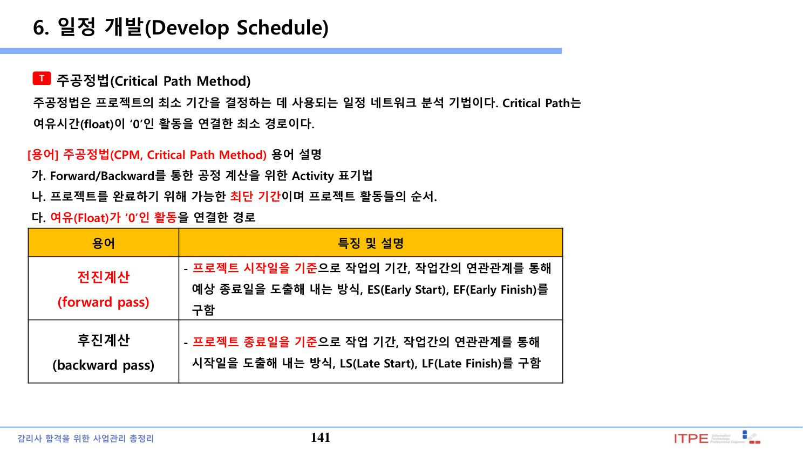
총 여유(Total Float) = LS − ES = LF − EF
| 개념 | 내용 |
|---|---|
| 주공정(Critical Path) | 가장 긴 경로 = 프로젝트 최단 완료기간. 여유(Float) = 0 |
| 총 여유(Total Float) | 프로젝트 종료를 지연시키지 않고 활동을 늦출 수 있는 시간 |
| 자유 여유(Free Float) | 후행 활동의 ES를 지연시키지 않고 늦출 수 있는 시간 |
9. 일정 개발 – 자원 최적화 · 시뮬레이션 ★★
일정 개발은 활동 순서·기간·자원 제약을 분석하여 일정 모델(일정 기준선)을 확정하는 프로세스다. 자원 최적화·시뮬레이션 기법을 활용한다.
| 기법 | 내용 |
|---|---|
| 자원 평준화(Resource Leveling) | 자원 제약(가용량 한계)에 맞춰 일정 조정. 주공정·기간이 변할 수 있음 |
| 자원 평활(Resource Smoothing) | 여유(Float) 범위 내에서만 조정. 주공정·완료일 불변 |
| What-if 시나리오 분석 | 다양한 상황을 가정해 일정 영향 분석 |
| 몬테카를로 시뮬레이션 | 활동 기간의 확률분포를 반복 시뮬레이션하여 완료일·비용의 확률 추정 |
▸ 원본 p.138 표 복원: 일정 개발(Develop Schedule)
| 입력물(Input) | 도구 및 기법(Tool & Technique) | 산출물(Output) |
|---|---|---|
| •일정 관리 계획서 (Schedule Management Plan) •활동 목록(Activity List) •활동 속성(Activity Attributes) •프로젝트 일정 네트워크 다이어그램 •활동 자원 요구사항 •자원 달력 (Resource Calendars) •활동 기간 산정치 (Activity Duration Estimates) •프로젝트 범위 기술서 (Project Scope Statement) •위험 관리대장(Risk Register) •프로젝트 팀원 배정 (Project Staff Assignments) •자원 분류 체계(RBS) •기업 환경 요인 •조직 프로세스 자산 | 일정 네트워크 분석 (Schedule Network Analysis) 주공정법(Critical Path Method) 주공정연쇄법(Critical Chain Method) 자원 최적화 기법 (Resource Optimization Techniques) 모델링 기법(Modeling Techniques) 선도 및 지연(Leads and Lags) 일정 단축(Schedule Compression) 일정 도구(Scheduling Tool) | 일정 기준선(Schedule Baseline)★ 프로젝트 일정(Project Schedule) 일정 데이터(Schedule Data) 프로젝트 달력 (Project Calendars) 프로젝트 관리 계획서 갱신 (Project Management Plan Updates) 프로젝트 문서 갱신 (Project Document Updates) |
▸ 원본 p.158 표 복원: 일정 개발(Develop Schedule)
| 구분 | 설명 |
|---|---|
| 수행예정 기간이 5일인 활동을 3일로 단축해도 전체 기간은 변함없고, 7일로 지연되면 전체기간 은 2일 지연 | |
| 자원제약조건을 반영 하면 일정지연 | |
| Critical Chain에서의 납기 지연 상황 | •158 |
▸ 원본 p.180 표 복원: 일정 통제
| 입력물(Input) | 도구 및 기법(Tool & Technique) | 산출물(Output) |
|---|---|---|
| 일정 관리 계획서 (Schedule Management Plan) 프로젝트 일정(Project Schedule) 작업 성과 데이터 (Work Performance Data) 프로젝트 달력 (Project Calendars) 일정 데이터(Schedule Data) 조직 프로세스 자산 (Organizational Process Assets) | 성과 검토(Performance Reviews) 프로젝트 관리 소프트웨어 (Project Management Software) 자원 최적화 기법 (Resource Optimization Techniques) 모델링 기법(Modeling Techniques) 선도 및 지연(Leads and Lags) 일정 단축(Schedule Compression) 일정 도구(Scheduling Tool) | 작업 성과 정보 (Work Performance Information) 일정 추정치(Schedule Forecasts) 변경 요청(Change Requests) 프로젝트 관리 계획서 갱신 (Project Management Plan Updates) 프로젝트 문서 갱신 (Project Document Updates) 조직 프로세스 자산 갱신 (Organizational Process Assets) |
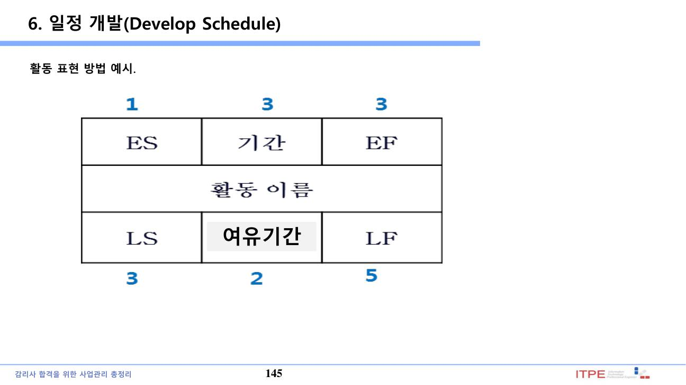
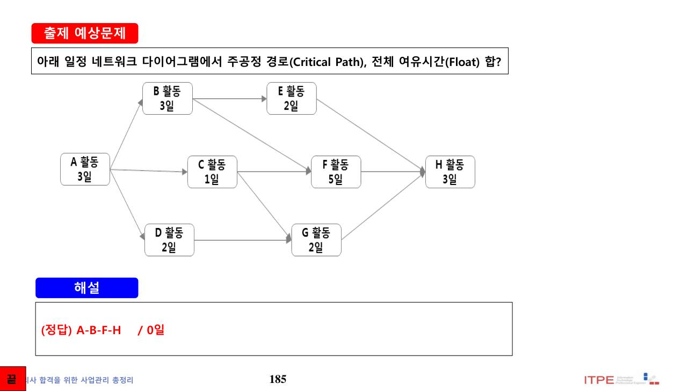
10. 일정 단축 기법 ★★
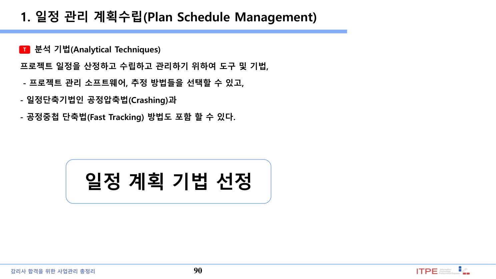
| 기법 | 내용·특징 |
|---|---|
| 공정 압축(Crashing) | 자원(인력·비용) 추가로 주공정 활동 기간 단축 → 비용 증가 |
| 공정 중첩(Fast Tracking) | 순차 활동을 병행 수행 → 위험(재작업) 증가, 비용 증가는 적음 |
📚 전체 기출·예상문제 (16문항) — 원문 수록
본 강좌 원본 PDF에 수록된 기출·예상문제를 빠짐없이 원문 그대로 정리했습니다. 정답·해설은 강의 원문 기준입니다.